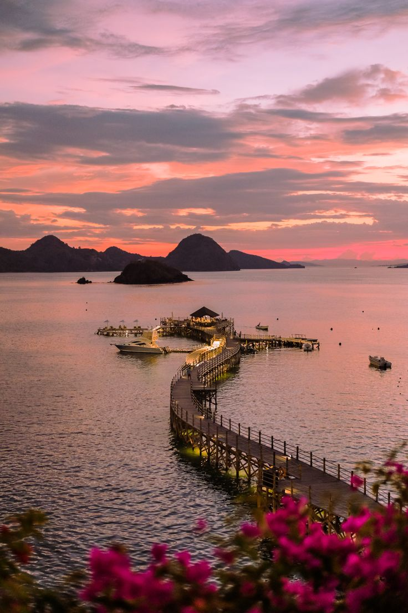
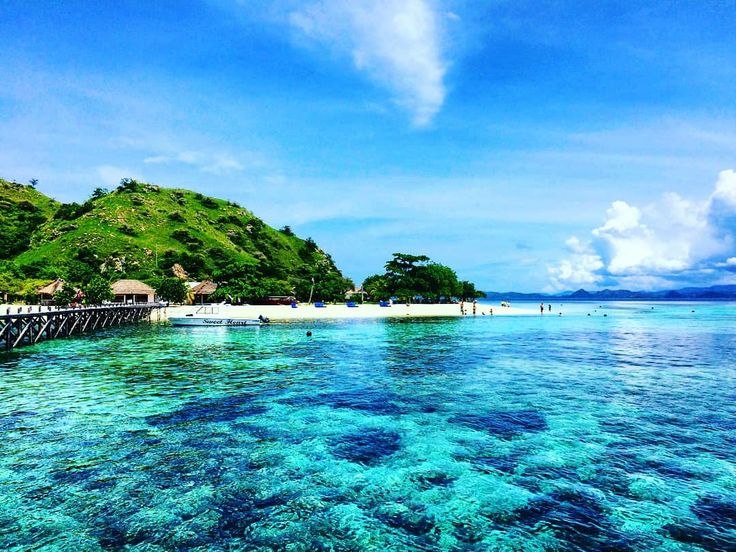
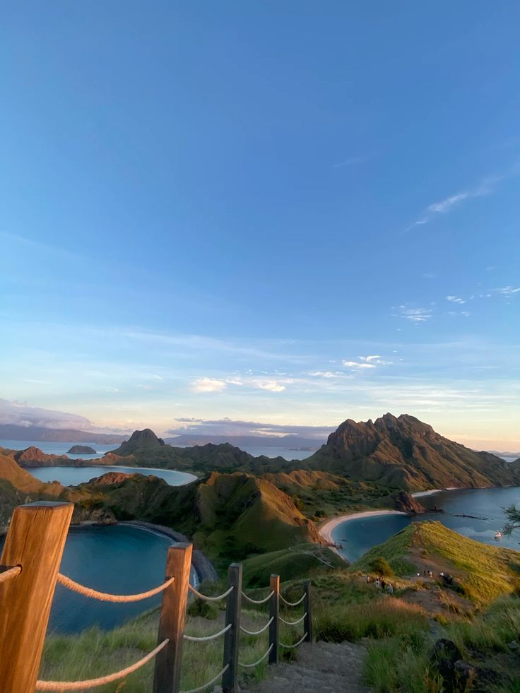
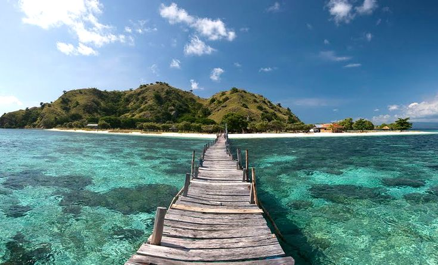
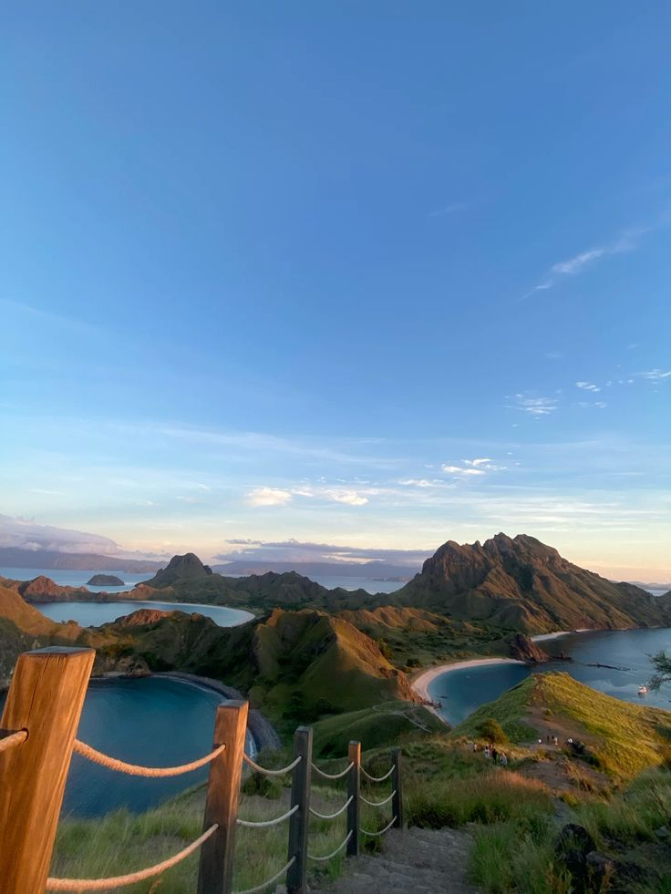
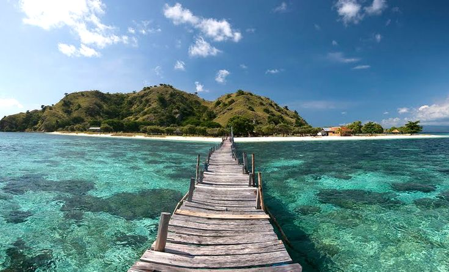

Labuan Bajo
Labuan Bajo adalah pintu gerbang menuju petualangan eksotis di Nusa Tenggara Timur, termasuk kunjungan ke Pulau Komodo dan keindahan laut Flores yang menakjubkan.



Labuan Bajo adalah pintu gerbang menuju petualangan eksotis di Nusa Tenggara Timur, termasuk kunjungan ke Pulau Komodo dan keindahan laut Flores yang menakjubkan.

